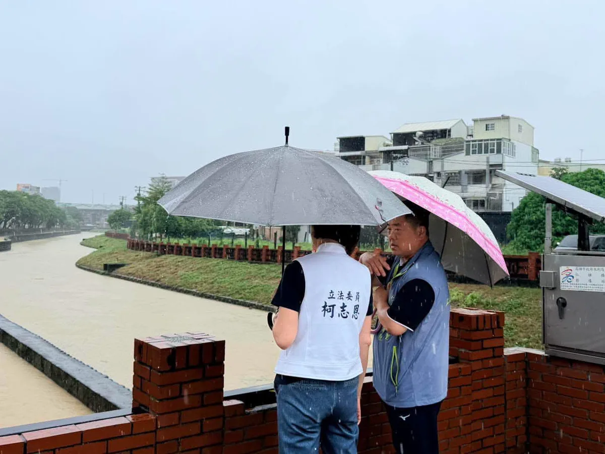
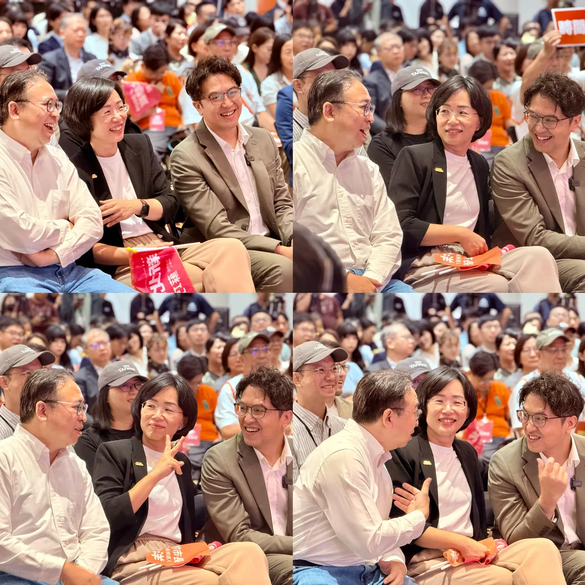

MAYOR2026.OBSERVE.TW
整理臺北、新北、桃園、臺中、臺南、高雄市長候選人的官方公開發文，跨平台合併時間軸與議題比例。
Six Municipalities
最後更新 2026-08-22 23:50
Latest

@schuanglawyer:Lokah su ga? 你好嗎？原住民議員的選區跟市長的一樣大，這些日子，謝卓儒議員候選人 @hsiehchoju 跟我一樣走遍13區，傾聽族人的心聲。 卓儒雖然是第一次投入選戰，但上台時穩健又自信。這些年來，他歷經伍麗華委員 @saidai_reseres 、林志強議員兩位強棒扎實特訓，對族人的服務從未間斷，我相信他絕對會是未來議會最強即戰力💪 我跟原住民事務的緣分很深，從12年前在市府服務，就有原住民族學者跟我說，「從沒看過這麼支持我們的漢人官員」。進入立法院後，我也時常向陳瑩委員 @asenayig 、伍麗華委員請益，全力捍衛族人權益。 卓儒跟我提過，文化傳承，是原住民族人的根。所以當市府縮減返鄉參與歲時祭儀的交通費，大家都難以接受。我跟卓儒主張，交通補貼應恢復為來回程，並檢討繁瑣的核銷與申請門檻，鼓勵大家跟原鄉維繫連結，讓資源跟主體性回到族人身上。 桃原要更好！感謝族人朋友的熱情，世杰跟卓儒一定會全力以赴，讓心桃原、動起來💖
@hsiehlungchieh:今天凌晨，安南區一聲大爆炸，造成15人受傷，其中還包括3名消防弟兄，周邊民宅、車輛也受到波及。 龍介先向受傷鄉親，以及徹夜搶救的消防、警察、醫護人員說聲辛苦。該安置、該協助求償的，市府都要馬上做；但救災之外，這件事絕對不能只當成一場普通火警。 目前查到，地主原本是借地作停車場，後來卻有人把含鋁、鎂、廢油等廢棄物運進來堆置；涉案高雄業者還沒有任何廢棄物清理證照。更離譜的是，這些廢棄物到底從哪裡來、誰負責清運、業者跟現場是什麼關係，到現在都還沒有查清楚。 龍介要問：這麼危險的東西，怎麼可以一路進到住宅區旁，堆到爆炸了，政府才知道？ 而且，這已經不是第一次。去年後壁烏樹林、城西垃圾場大火，到8月七股、將軍光電案場又接連起火，廢棄物、太陽能板相關資材燒成一片；現在安南又炸出非法廢棄物堆置場。事情一件接一件，台南的環保治理，真的只是「差」而已嗎？ 怎麼一碰到大量廢棄物，最後常常都是一把火？龍介不是斷言有人縱火，但檢警、調查單位真的要把眉角看清楚。廢棄物來源、清運業者、土地、仲介、金流，背後有沒有一整條非法利益鏈，全部都要查到底！


@zenolai:高雄市全區明日停止上班、停止上課 受到西南風及低壓帶影響，今晚至明日仍有局部大雨或豪雨，清晨至上午雨勢可能再增強。考量持續降雨帶來的風險，高雄市政府宣布：明（23）日高雄市全區停止上班、停止上課。 請市民朋友減少不必要外出，低窪地區留意積水，山區居民配合警戒及撤離通知。 第一線防災夥伴仍持續戒備，謝謝大家堅守崗位。若有災情請通報1999。請大家注意安全！


@su.chiaohui:暑假七場「水獺媽媽樂園」圓滿成功！我們萬聖節再見🧡 今天我們在土城舉辦了今年暑假最後一場「水獺媽媽樂園」，水獺媽媽我真的很高興，從板橋、林口、淡水、汐止、鶯歌、中和到土城，每一場都有上千組的親子家庭和我們一起學習、一起玩。 我也和大家分享，未來我們還要舉辦「萬聖節特別場」！🧚♀️🧛🎃 「做中玩、玩中學」就是水獺媽媽樂園的精神，未來我們會繼續推出更多兼具創意與教育意義的親子活動，希望讓新北變得更有趣、更好玩！

@prof.kochihen:近日高雄豪雨不斷，趁著行程空檔，特別趕赴仁武區赤山里，關心地方積淹水情況，也與謝青原里長一同前往仁雄橋，了解曹公新圳排水情形。 謝里長表示，昨晚起里內陸續出現排水不及、積淹水情況，所幸即時反映處理，加上今早雨勢稍緩，積水已陸續排除。 另外，澄清湖原博館基地每逢大雨就有黃泥水流出，造成居民困擾，我也會向原民會反映，協助地方尋求改善。 雨勢仍可能持續，請大家做好防雨、防淹水準備，非必要盡量減少外出，平安最重要。

@schuanglawyer:「欸，黃世杰！未來你會跟大兩屆的蘇巧慧學姐、同家族的沈伯洋學弟一起競選市長喔！」如果搭時光機回去告訴20歲的自己，絕對不可能想像這一天。 2026，一起為家鄉衝！ @su.chiaohui @pumashen

誰想得到，20年前我和兩位法律系學弟，20年後會一起成為市長候選人🤣

@schuanglawyer:一個人唱會「怕怕」，請出最強神秘嘉賓媽媽一起唱🎤母子合唱〈海海人生〉，唱的是陪伴，也是對家鄉的感情。 桃園就是我們的家。長輩的照顧、交通、醫療、城市的建設發展、年輕人與孩子們的未來，每一件家鄉的事，都是我的事。 距離投票倒數98天🗳️給世杰一個機會，我會用行動，讓桃園更好💖

上千組親子一起玩！#水獺媽媽樂園 雙和場大成功🎉 現場不只有好玩的遊戲，這次我們特別邀請 義興閣掌中劇團，將傳統布袋戲結合搖滾音樂，用新潮又有趣的方式演出台灣的在地文化，讓大小朋友看得目不轉睛，笑聲不斷！還有許多有趣的互動關卡，讓孩子邊玩邊學台語、瞭解知識，更帶著滿滿的收穫和快樂回家！ 暑假最後一場就在土城！還沒來過的大小朋友，千萬別錯過囉！ 📍水獺媽媽樂園 土城場 時間｜8/22（六）09:00-16:00 地點｜樂利國小樂利廣場（土城區裕生路65號）

@schuanglawyer:大雨中接著趕到內壢☔️看到這麼多市民朋友，來到「中壢周杰倫」彭俊豪議員 @c_peng 座談會現場，非常感動、也非常感謝。 俊豪有三屆議員的歷練，還是非常勤勞，我在立委、法務部次長任內，跑行程就常遇到俊豪。從交通、教育、公園到社會福利，只要市民在乎，都能看見他在第一線奔走的身影。 對內壢人來說，交通是大家最有感的問題之一，我從桃園區過來的路上也塞了很久。這裡人口密集、學校多、工業區通勤需求大，鐵路地下化施工期間交通壅塞，是鄉親每天都在面對的問題，如同俊豪所說，現在中壢就像一個大工地。 未來世杰進入市府，會加速推動鐵路地下化、做好施工期間交通配套，重新檢討公車路線與班次，改善校園周邊人行環境，讓軌道、公車、道路與通學安全一起升級。 醫療是市民最關心的事，南桃園人口持續成長，但醫療資源跟不上人口增加的速度。未來我會主動媒合醫學中心、大學與醫療體系，優先發展癌症、兒童、高齡及急重症等特色醫療，同時積極為桃園第二座醫學中心布局，讓市民就醫更便利。 好的議員，要為地方爭取、為鄉親發聲。好的市長，則要把需求化為政策、把建設加速完成。讓桃園更進步，請支持杰出世代、豪邁前進！讓心中壢，動起來💖
@su.chiaohui:TVBS專訪新北市長候選人蘇巧慧 第一次聽到有人用辦活動來紓壓？？？ ✨「水獺媽媽樂園」把知識融入遊戲，讓孩子邊玩邊學！ ✨手遊「皮克敏」紀錄巧慧努力跑行程的痕跡，讓新北29區都開滿花朵！ ✨巧慧要讓新北各區的特色被更多人看見，讓住在新北的大家，都能為這座城市感到驕傲！ 觀看連結🔗 https://youtu.be/bkEJHtAepS0?si=QXXVnNCar7x4IGlw
@hsiehlungchieh:📣受低壓帶與偏強西南風影響，南台灣降下驚人雨量，臺南市各地雨勢持續增強！ ⚠️明（23）日，臺南市停止上班上課，請各位市民朋友注意安全，非必要請減少外出！


@chen_tingfei:🌧️【豪雨來襲，安全第一】 明天8/23（日）因豪雨影響，臺南市政府宣布停班、停課一天。 提醒大家，明天非必要請儘量留在家中，避免前往山區、低窪及容易積淹水地區，也請隨時留意最新天氣與市府公告。 希望這場雨趕快過去，大家平平安安，台南加油！ #陳亭妃 #停班停課 #豪雨特報 #安全第一 #台南


@a_chun1973:🌧️ 雨中掃水湳市場！遇水則發、一路發！ 今天一早來到水湳市場，雖然天空不時下起雨，但澆不熄大家的熱情！謝謝沿途攤商、鄉親朋友一句句「加油」，都讓我們台中隊更有力量💪 水湳市場串聯西屯、北屯、北區生活圈，不只是大家採買日常的地方，更承載著台中最熟悉的人情味。 選戰倒數98天 風雨無阻，繼續向前拚☔️💚


@hammer__lee:把刀擺一邊，圍裙來不及拆，他直接走出來，替我開路。 今天我到板橋朝陽市場，向鄉親和攤商問候。見到了好多朋友，這位大哥一見到我，就立刻放下手上的工作，走出來為我加油。 但讓人感動的是，不管我往前走了多遠，往旁邊一看，他不是在我旁邊，就是在我前頭，為我喊聲，讓鄉親注意到我。 有鄉親從對向經過，確定我有看到他，默默比了一個讚，就快速走過去。這種內斂的可愛，我很珍惜。 還有民眾對我說「本人更帥」，歹勢啦，瘦了五公斤，看來有點成效。一句「看到你很開心」，說實在，鄉親安居樂業，我是更安心。 感謝陳文成里長、陳清玉里長，還有所有在地議員的陪同。 今天他替我開路，接下來，換我替大家鋪路。

「欸，黃世杰！未來你會跟大兩屆的蘇巧慧學姐、同家族的沈伯洋學弟一起競選市長喔！」如果搭時光機回去告訴20歲的自己，絕對不可能想像這一天。 2026，一起為家鄉衝！ @su.chiaohui @pumashen

@zenolai:今天受低壓帶及西南風影響，高雄市有局部大雨或豪雨，市府豪雨災害應變中心已於上午提升為二級開設，全面啟動防災應變機制。 目前市區已有多處短延時強降雨，部分路段出現積淹水情形，高雄機場也因雷雨影響暫時停止地面作業。 此外，農業部稍早針對桃源區及六龜區發布了39條土石流黃色警戒，以及大規模崩塌警戒，六龜區(興龍里)、(新發里)。請上述警戒區域的市民朋友，務必配合市府和區公所的防救災指示，迅速落實撤離工作，確保自身安全。 請市民朋友務必注意瞬間大雨、雷擊和強風。行車用路請放慢車速，並避免前往山區和溪河附近活動。接下來的雨勢可能還會加強，我會持續緊盯各項災情和應變措施。請大家出門務必小心，注意安全。

一個人唱會「怕怕」，請出最強神秘嘉賓媽媽一起唱🎤母子合唱〈海海人生〉，唱的是陪伴，也是對家鄉的感情。 桃園就是我們的家。長輩的照顧、交通、醫療、城市的建設發展、年輕人與孩子們的未來，每一件家鄉的事，都是我的事。 距離投票倒數98天🗳️給世杰一個機會，我會用行動，讓桃園更好💖

一晚兩場，從南區跑到南屯，臺中升級的腳步不能停！💪 今晚感謝羅廷瑋委員、 林霈涵-台中市議員（東區、南區）、 李中愛台中議員、 廖偉翔委員、 林敏霖前議長與劉士州議員接力相挺，也謝謝柳采葳議員從臺北趕來臺中一路從南區挺到南屯。偉翔一句「 #發兩萬、#打皮蛇、 #鞭壞人」，更把現場氣氛炒到最高點！ 從皮蛇疫苗補助、敬老愛心卡當年度不按月歸零，到校園廁所改善、免費公車、捷運加速，以及AI帶動產業升級，啟臣要做的，就是把市民在意的事一件件做好。 接棒盧秀燕，不只延續好政策，更要加速建設、升級臺中。臺中只能前進，不能後退；我們一起守住幸福，讓世界看見臺中！ #臺中升級 #幸福加給 #臺中啟程 #打造旗艦城

大雨中接著趕到內壢☔️看到這麼多市民朋友，來到「中壢周杰倫」彭俊豪議員 @c_peng 的座談會現場，真的非常感動、也非常感謝。 俊豪已經有三屆議員的歷練跟扎根，還是非常勤勞，我在立委、法務部次長任內，跑行程就常常遇到俊豪。無論是交通、教育、公園到社會福利，只要是市民在乎的事，都能看見俊豪在第一線奔走的認真身影。 對內壢人來說，交通是大家最有感的問題之一，我剛剛從桃園區過來的路上，也塞了很久。這裡人口密集、學校多、工業區通勤需求大，鐵路地下化施工期間的交通壅塞，更是鄉親每天都在面對的問題，如同俊豪所說，現在的中壢就像一個大型工地。 未來世杰進入市政府，會加速推動鐵路地下化、做好施工期間交通配套，重新檢討公車路線與班次，改善校園周邊人行環境，讓軌道、公車、道路與通學安全一起升級。 醫療也是市民最關心的事，中壢以及整個南桃園人口持續成長，但醫療資源跟不上人口增加的速度。未來我會主動媒合醫學中心、大學與醫療體系，優先發展癌症、兒童、高齡及急重症等特色醫療，同時積極為桃園第二座醫學中心布局，讓市民就醫更便利。 感謝大雨中來到現場的市民，還有張火爐主委、興國里彭政銘里長、中建里李應偉里長、舊明里羅善婷里長、中壢車站商圈發展協會湯玟琪理事長，在風雨中堅持來為俊豪跟世杰加油。 好的議員，會為地方爭取、為鄉親發聲。好的市長，則要把這些需求化為政策、把建設加速完成。讓桃園更進步，請支持杰出世代、豪邁前進！讓心中壢，動起來💖

@schuanglawyer:即使下著雨，仍然看見鄉親朋友熱情參與桃園客家義民祭-挑擔踩街活動，用創意、用行動延續客家庄重要的傳統文化，真的很感動💖 義民精神就是團結、顧鄉土、願意為家園承擔。世杰參選桃園市長，也希望承擔起這份責任，把市民的需要放在心上，團結各區、各族群的力量，一起打造更好的桃園。 祈求義民爺庇佑桃園平安順利、大發展，也祝福各位鄉親身體健康、闔家平安！
@a_chun1973:中秋將至，每一年、每位元首不分黨派都會向庇護工場及弱勢團體採購中秋禮盒，但今年總預算拖到8月底才三讀，又因為立法院表決全數刪凍3000萬元國務機要費，這些中秋禮盒訂單蒙受波及，讓人好急又生氣。 「孩子沒有做錯事」，台中包括十方、立達、瑪利亞等3家被刪單，因為總統府大單預算沒過，加上原物料上漲，營運非常困難。如果有機會的話，我想邀請大刀刪凍預算的委員，能到台中機構親眼看看孩子有多努力！ 一份禮盒，對庇護工場的孩子與弱勢朋友來說，是一份工作、一份收入，每片餅乾、每塊糕餅都靠雙手烘焙、值得尊敬。我們黨團也獻上棉薄之力、媒合企業團體，呼籲企業團體協助採購度難關。 政治人物可以攻防，政黨可以競爭，但庇護工場不應成為政治鬥爭的犧牲品。社會各界集資認購，終究只是補救，而非長遠制度。社會弱勢需要的，是穩定、可預期的支持，合理監督，但請維持住那條有溫度、負有社會責任的公益底線。


@pumashen:我發誓…

@schuanglawyer:一早，我和國漳 @lin.kuo.chang ，分別從桃園、宜蘭趕到台北，來為伯洋 @pumashen 、巧慧 @su.chiaohui 應援💪 網友非常有創意，從「洋流慧聚」，接到氣勢磅礴的下聯「勝利漳杰」。我們都是律師出身，過去在體制內，我們用最嚴謹的法學專業守護人民權利、捍衛民主法治。 現在，我們帶著專業返鄉，將串聯成推動區域合作、強化城市治理的最強連線，用新思維跟新模式，攜手推動交通建設、產業布局、青年住宅，讓市民生活更宜居宜業！ 感謝各位先進們，一起現身相挺。 我們不只有專業，更有改變城市的決心。11/28，一起為家鄉打出最漂亮的勝仗！

@pumashen:今天我和巧慧一進場 放眼望去都是認識的人！ ⠀ 有一起在弄春池 觀察生態的朋友， 一起打球的朋友， 一起熬夜讀書的朋友， 根本同學會XD ⠀ 看到大家超嗨， 差點不小心 拿麥克風開始爆料哈哈哈 ⠀ 三個月後， 我們再一起畫上 達摩的另一個眼睛！
@su.chiaohui:誰想得到，20年前我和 @pumashen @schuanglawyer 兩位法律系學弟，20年後會一起成為市長候選人🤣

石岡起飛、幸福山城！ #2026臺中石岡熱氣球嘉年華登場 🎈 大家早安！看著繽紛的熱氣球緩緩升空，心情真的好療癒！石岡熱氣球嘉年華自109年首次舉辦，當時就突破10萬人次到訪，如今嘉年華也一年比一年更盛大、熱鬧。 今年更是請來全球唯一「臺東天后宮媽祖造型熱氣球」，與現場好朋友們一同在山城體驗繫留升空，石岡在地的石忠宮媽祖神尊也駐駕現場，並隨熱氣球升空祈福，象徵石岡起飛、臺中持續向上發展，保佑大家平平安安、事事順心！ 為期三天的嘉年華活動（8/22-8/24），啟臣邀請大家來到石岡土牛運動公園！看熱氣球之餘，也順道暢遊東勢、新社、豐原、和平等山城好去處，品嚐在地美食、享受當季農產、體驗山城好風光。 #臺中啟程 #打造旗艦城 #石岡起飛 #幸福山城

1958年創立的左營哈囉市場，早年因美軍駐紮左營，攤商常用一句「Hello」熱情招呼，久而久之有了「哈囉市場」這個稱呼。至今約有兩百家攤商，是許多左營人熟悉的老市場。 適逢中元普渡，很高興和林靜宏自治會長、攤商朋友相聚，祝福大家生意興隆、平安順利！ 「2026國標舞世界盃－台灣站高雄運動舞蹈公開賽」今年邁入第三屆，來自十多個國家與地區的選手、評審齊聚一堂。 謝謝大會邀請我參加開幕典禮，更感謝許哲睿理事長、蔡宛蓁秘書長持續將國際舞蹈賽事帶到高雄，祝福所有參賽選手盡情享受比賽！ 民防總隊交通義勇警察大隊林園中隊今天舉行授階，恭喜獲得授階的義交夥伴，也謝謝施榮宏中隊長和每一位隊員在第一線的無私奉獻。 高雄是個多元包容的城市，這些不同的面貌，都是我熟悉、也珍惜的風景。選戰倒數99天，謝謝大家一路的支持與鼓勵，一起守護這樣的日常，繼續為高雄打拚。 高雄小金剛許智傑李雅慧 高雄市議員黃文志 高雄市議員尹立 左營楠梓市議員參選人理想青年 張以理 李柏毅 拚搏未來 服務團隊 黃捷 服務團隊 曾俊傑 服務團隊

一晚兩場，從南區跑到南屯，臺中升級的腳步不能停！💪 今晚感謝羅廷瑋委員、 林霈涵-台中市議員（東區、南區）、 李中愛台中議員、 廖偉翔委員、 林敏霖前議長與劉士州議員接力相挺，也謝謝柳采葳議員從臺北趕來臺中一路從南區挺到南屯。偉翔一句「 #發兩萬、#打皮蛇、 #鞭壞人」，更把現場氣氛炒到最高點！ 從皮蛇疫苗補助、敬老愛心卡當年度不按月歸零，到校園廁所改善、免費公車、捷運加速，以及AI帶動產業升級，啟臣要做的，就是把市民在意的事一件件做好。 接棒盧秀燕，不只延續好政策，更要加速建設、升級臺中。臺中只能前進，不能後退；我們一起守住幸福，讓世界看見臺中！ #臺中升級 #幸福加給 #臺中啟程 #打造旗艦城

大雨中接著趕到內壢☔️看到這麼多市民朋友，來到中壢周杰倫彭俊豪議員的座談會現場，真的非常感動、也非常感謝。 俊豪已經有三屆議員的歷練跟扎根，還是非常勤跑，我在立委、法務部次長任內，跑行程就常常遇到俊豪。無論是交通、教育、公園到社會福利，只要是市民在乎的事，都能看見俊豪在第一線奔走的認真身影。 對內壢人來說，交通是大家最有感的問題之一，我剛剛從桃園區過來的路上，也塞了很久。這裡人口密集、學校多、工業區通勤需求大，鐵路地下化施工期間的交通壅塞，更是鄉親每天都在面對的問題，如同俊豪所說，現在的中壢就像一個大型工地。 未來世杰進入市政府，會加速推動鐵路地下化、做好施工期間交通配套，重新檢討公車路線與班次，改善校園周邊人行環境，讓軌道、公車、道路與通學安全一起升級。 醫療也是市民最關心的事，中壢以及整個南桃園人口持續成長，但醫療資源跟不上人口增加的速度。未來我會主動媒合醫學中心、大學與醫療體系，優先發展癌症、兒童、高齡及急重症等特色醫療，同時積極為桃園第二座醫學中心布局，讓市民就醫更便利。 感謝大雨中來到現場的市民，還有張火爐主委、興國里彭政銘里長、中建里李應偉里長、舊明里羅善婷里長、中壢車站商圈發展協會湯玟琪理事長，在風雨中堅持來為俊豪跟世杰加油。 好的議員，會為地方爭取、為鄉親發聲。好的市長，則要把這些需求化為政策、把建設加速完成。讓桃園更進步，請支持杰出世代、豪邁前進！讓心中壢，動起來💖